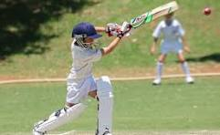
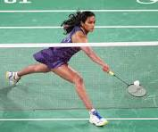
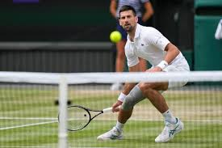

Cricket is a bat-and-ball game played between two teams of eleven players on a field, at the centre of which is a 22-yard (20-metre; 66-foot) pitch with a wicket at each end, each comprising two bails (small sticks) balanced on three stumps. Two players from the batting team, the striker and nonstriker, stand in front of either wicket holding bats, while one player from the fielding team, the bowler, bowls the ball toward the striker's wicket from the opposite end of the pitch. The striker's goal is to hit the bowled ball with the bat and then switch places with the nonstriker, with the batting team scoring one run for each of these exchanges. Runs are also scored when the ball reaches the boundary of the field or when the ball is bowled illegally.
Football is a family of team sports that involve, to varying degrees, kicking a ball to score a goal. Unqualified, the word football generally means the form of football that is the most popular where the word is used. Sports commonly called football include association football (known as soccer in Australia, Canada, South Africa, the United States, and sometimes in Ireland and New Zealand); Australian rules football; Gaelic football; gridiron football (specifically American football, arena football, or Canadian football)
Badminton is a racquet sport played using racquets to hit a shuttlecock across a net. Although it may be played with larger teams, the most co
Tennis is a racket sport that is played either individually against a single opponent (singles) or between two teams of two players each (doubles). Each player uses a tennis racket strung with a cord to strike a hollow rubber ball covered with felt over or around a net and into the opponent's court. The object of the game is to manoeuvre the ball in such a way that the opponent is not able to play a valid return.
